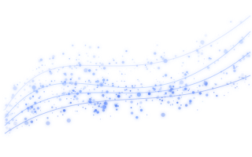
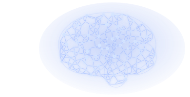
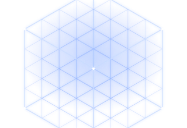

RESEARCH
Research
We explore fundamental questions in AI, from collective decision-making to what models represent inside. Every page states what failed and what was not checked.
View All Research
Prototype · Unvalidated
KORE
Knowledge Orchestration & Retrieval Engine
A three-person prototype for selecting knowledge to give a language model.
Learn More →Hypothesis Refuted
H1
Majority-vote backfire
Tested whether majority voting backfires more often than it helps.
Learn More →
In Progress
Paper 5
Predicting success via internal signals
A closer look at what signals success.
Learn More →
Reproduction · Partial
LLM Internal Computing
Verifying a deterministic computer inside an LLM
Unit-test reproduction of two upstream projects. No performance claims.
Learn More →